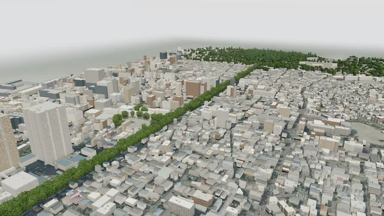

Feel site #1
《Feel Hikawa》氷川参道を歩く
大宮の氷川参道を、スマホをポケットに入れて歩く。六つの場所で立ち止まり、自分の目で見て、碧の話を聞き、話して、もう一度見る。謎の答えは、現地の自然の中にある。
- 場所一の鳥居 → 三の鳥居 約 1.9 km、その先の神池
- 所要45〜70 分（想定）
- 持ち物スマホ（イヤホンがあると良い）
- 体験の型碧の間（みる → きく → かたる → かえりみる）
記録と会話の扱い
見方の記録は端末の中だけに残り、歩いた道筋は残さない。公開中の版では、碧とは用意した問いを選んで話し、どこにも送らない。自由に書いて話しかけられる版では、そのときだけ、書いた言葉とその場所でのやりとりを、答えをつくるために外部の AI 事業者に送る。mitsulab は会話を保存せず、学習にも使わない。歩きながら画面は見ない。境内では参拝の妨げにならない所で。